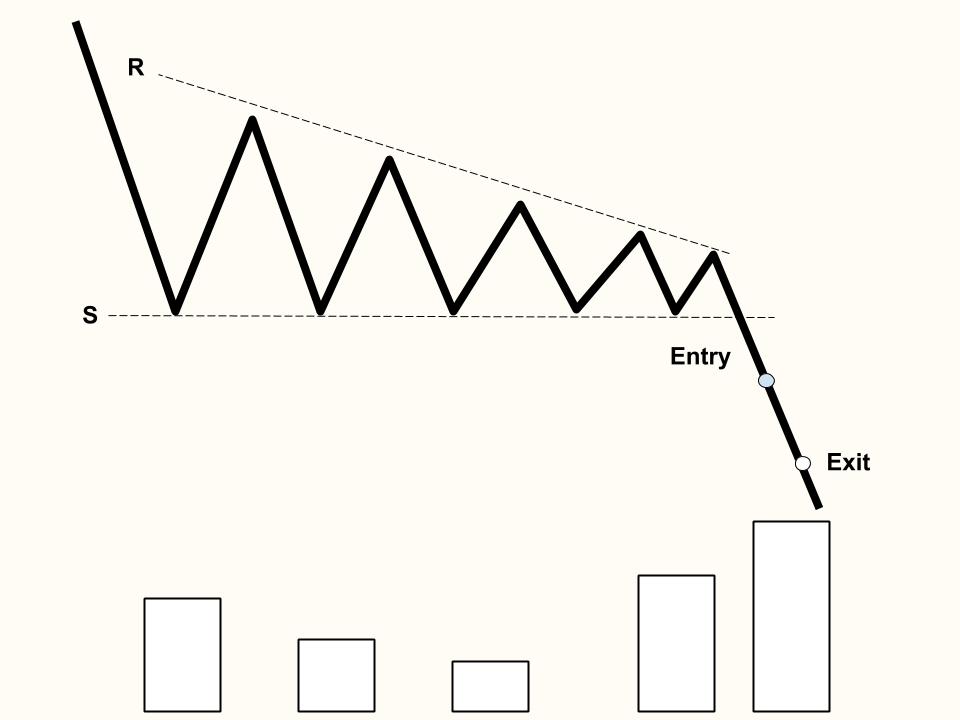

Ascending Triangles
The resistance line can be drawn as a horizontal line, with two or more nearly identical highs.
The support line can be drawn as an ascending diagonal line, since there will be two or more increasing troughs.
This continuation pattern is a bullish formation that can be found in an uptrend during a consolidation period.
Similar to other triangles, volume usually contracts during the pattern formation.
Breakout Confirmation: A close above previous peaks with average volume
Exit: 66% of the triangle's length

Descending Triangles
The resistance line can be drawn as a descending diagonal line, since there will be two or more decreasing troughs.
The support line can be drawn as a horizontal line, with two or more identical lows.
This continuation pattern is a bullish formation that can be found in an uptrend during a consolidation period.
Similar to other triangles, volume usually contracts during the pattern formation.
Entry: A close below previous peaks with average volume
Exit: 66% of the triangle's length
Back to Homepage
Forward to Cup and Handle